토목기사 (2011-10-02 기출문제)
1과목: 응용역학
1. 그림과 같이 가운데가 비어 있는 직사각형 단면 기둥의 길이가 L=10m일 때 이 기둥의 세장비는?
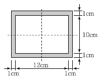
- 1.9
- 191.9
- 2.2
- 217.3
(정답률: 82%)

2. 그림과 같은 단면에서 외곽 원의 직경(D)이 60cm이고 내부 원의 직경( D/2)은 30cm라면, 빗금 친 부분의 도심의 위치는 x에서 얼마나 떨어진 곳인가?
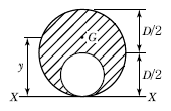
- 33cm
- 35cm
- 37cm
- 39cm
(정답률: 66%)
3. 다음 트러스에서 AB부재의 부재력으로 옳은 것은?
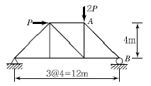
- 1.179P(압축)
- 2.357P(압축)
- 1.179P(인장)
- 2.357P(인장)
(정답률: 67%)
4. 균질한 균일 단면봉이 그림과 같이 P1, P2, P3의 하중을 B, C, D점에서 받고 있다. 각 구간의 거리 a=1.0m, b =0.4m, c =0.6m이고 P2=10t, P3=5t의 하중이 작용할 때 D점에서 의 수직방향 변위가 일어나지 않기 위한 하중 P1은 얼마인가?
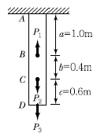
- 5t
- 6t
- 8t
- 24t
(정답률: 69%)
5. 다음 그림과 같은 보에서 두 지점의 반력이 같게 되는 하중의 위치(x)를 구하면?
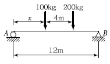
- 0.33m
- 1.33m
- 2.33m
- 3.33m
(정답률: 82%)
6. 그림과 같은 부정정보에서 지점 A의 휨모멘트 값을 옳게 나타낸 것은?
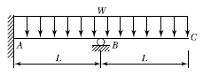
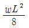
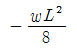
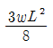
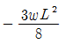
(정답률: 55%)
7. 부재 AB의 강성도(Stiffness)를 바르게 나타낸 것은?
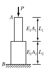
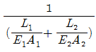
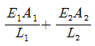
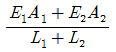
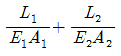
(정답률: 68%)
8. 단면 2차 모멘트가 I이고 길이가 I인 균일한 단면의 직선상(直線狀)의 기둥이 있다. 그 양단이 고정되어 있을 때 오일러(Euler) 좌굴하중은? (단, 이 기둥의 영(Young)계수는 E이다.)
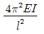
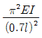
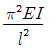
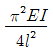
(정답률: 79%)
9. 다음 그림과 같은 정사각형의 도심 0에 관한 단면 2차 극모멘트는?
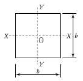
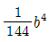
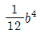
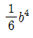
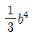
(정답률: 64%)
10. 그림과 같이 이축응력(二軸應力)을 받고 있는 요소의 체적변형률은? (단, 탄성계수 E = 2×106kg/cm2, 프와송비 v = 0.3 )
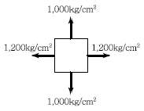
- 3.6×10－4
- 4.0×10－4
- 4.4×10－4
- 4.8×10－4
(정답률: 83%)
11. 그림과 같은 내민보에서 A점의 처짐은? (단, I=16,000cm4, E=2.0×106kg/cm2이다.)
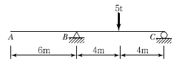
- 2.25cm
- 2.75cm
- 3.25cm
- 3.75cm
(정답률: 66%)
12. 다음 그림과 같이 속이 빈 단면에 전단력 V=15t이 작용하고 있다. 단면에 발생하는 최대전단응력은?
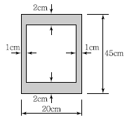
- 9.9kg/cm2
- 19.8kg/cm2
- 99kg/cm2
- 198kg/cm2
(정답률: 61%)
13. 길이가 6m인 단순보의 중앙에 3t의 집중하중이 작용할 때와 등분포하중 0.5t/m가 작용할 때의 최대 처짐량에 관한 설명으로 옳은 것은?
- 최대 처짐량은 같다.
- 집중하중의 처짐량이 분포하중의 처짐량 보다 1.3배 더 크다
- 집중하중의 처짐량이 분포하중의 처짐량 보다 1.6배 더 크다
- 분포하중의 처짐량이 집중하중의 처짐량 보다 1.3배 더 크다
(정답률: 63%)
14. 그림과 같은 라멘 구조물의 E점에서의 불균형모멘트에 대한 부재 EA의 모멘트 분배율은?
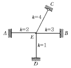
- 0.222
- 0.1667
- 0.2857
- 0.40
(정답률: 78%)
15. 다음 그림과 같은 3활절 포물선 아치의 수평반력(HA)은?
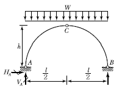
- 0
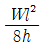
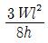
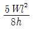
(정답률: 77%)
16. 그림과 같은 단순형 라멘에서 단면력에 관한 설명으로 틀린 것은? (단, 굴곡부는 강절점이다.)
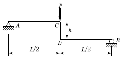
- 부재 AC에는 양(+)의 전단력이 발생한다.
- 부재 CD에는 휨모멘트가 발생하지 않는다.
- 부재 CD에는 전단력이 발생하지 않는다.
- 부재 BD에는 휨모멘트가 발생한다.
(정답률: 60%)
17. ｢.재료가 탄성적이고 Hooke의 법칙을 따르는 구조물에서 지점침하와 온도 변화가 없을 때, 한역계 Pn에 의해 변형되는 동안에 다른 역계 Pm가 하는 외적인 가상일은 Pm역계에 의해 변형하는 동안에 Pn역계가 하는 외적인 가상일과 같다.｣이것을 무엇이라 하는가?
- 가상일의 원리
- 카스틸리아노의 정리
- 최소일의 정리
- 베티의 법칙
(정답률: 63%)
18. 그림과 같은 강재(steel) 구조물이 있다. AC, BC부재의 단면적은 각각 10cm2, 20cm2고 연직하중 P=9t이 작용할 때 C점의 연직처짐을 구한 값은? (단, 강재의 종탄성계수는 2.⑤×106kg/cm2이다.)
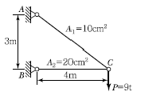
- 1.022cm
- 0.766cm
- 0.518cm
- 0.383cm
(정답률: 75%)
19. 단면이 원형(반지름 R)인 보에 휨모멘트 M이 작용할 때 이 보에 작용하는 최대휨응력은?
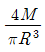
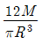
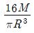
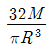
(정답률: 72%)
20. 내민보에 그림과 같이 지점 A에 모멘트가 작용하고 집중하중이 보의 끝에 작용한다. 이 보에 발생하는 최대 휨모멘트의 절대값은?
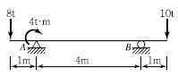
- 6t ㆍ m
- 8t ㆍ m
- 10 tㆍ m
- 12t ㆍ m
(정답률: 61%)
2과목: 측량학
21. 트래버스 측점A의 좌표 x, y가 (200m, 200m)이고 AB측선의 길이가 100m일 때 B점의 좌표는? (단, AB측선의 방위각은 195°이다.)
- (98.5m, 106.7)
- (103.4m, 174.1m)
- (－86.1m, 145.8m)
- (92.4m, －108.9m)
(정답률: 73%)
22. 직사각형 두 변의 길이를 1/200 정확도로 관측하여 면적을 산출할 때 산출된 면적의 정확도는?
- 1/50
- 1/100
- 1/200
- 1/300
(정답률: 75%)
23. 축척 1：50,000의 지형도에서 경사가 10%인 등경사선의 주곡선 간 도상거리는?
- 2mm
- 4mm
- 6mm
- 8mm
(정답률: 63%)
24. 원곡선에 대한 설명으로 틀린 것은?
- 원곡선을 설치하기 위한 기본요소는 반지름(R)과 교각(I)이다.
- 접선길이는 곡선반지름에 비례한다.
- 완화곡선은 원곡선의 분류에 포함되지 않는다.
- 고속도로와 같이 고속의 원활한 주행을 위해서는 복심곡선 또는 반향곡선을 주로 사용한다.
(정답률: 55%)
25. 지표상 P점에서 5km 떨어진 Q점을 관측할 때 Q점에 세워야 할 측표의 최소 높이는 약 얼마인가? (단, 지구반지름 R＝6,370km이고, P, Q점은 수평면상에 존재한다.)
- 4m
- 2m
- 1m
- 0.5m
(정답률: 64%)
26. 대단위 신도시를 건설하기 위한 넓은 지형의 정지공사에서 토량을 계산하고자 할 때 가장 적당한 방법은?
- 점고법
- 양단면 평균법
- 비례 중앙법
- 각주공식에 의한 방법
(정답률: 73%)
27. 사진측량에서 비행고도가 2,100m이고, 사진(I)의 주점기선장이 71mm, 사진(II)의 주점기선장이 73mm일 때 시차차(視差差)가 1.6mm인 그림자의 고저차는?
- 27m
- 37m
- 47m
- 57m
(정답률: 52%)
28. 수평각 관측방법에서 그림과 같이 각을 관측하는 방법은?
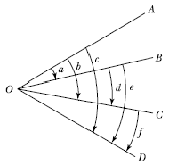
- 방향각 관측법
- 반복 관측법
- 배각 관측법
- 조합각 관측법
(정답률: 72%)
29. 하천측량에 대한 설명 중 옳지 않는 것은?
- 하천측량 시 처음에 할 일은 도상조사로서 유로 상황, 지역면적, 지형지물, 토지이용 사황 등을 조사하여야 한다.
- 심천측량은 하천의 수심 및 유수분의의 하저사항을 조사하고 횡단면도를 제작하는 측량을 말한다.
- 하천측량에서 수준측량을 할 때의 거리표는 하천의 중심에 직각방향으로 설치한다.
- 수위관측소의 위치는 지천의 합류점 및 분류점으로서 수위의 변화가 일어나기 쉬운 곳이 적당하다.
(정답률: 81%)
30. 축척 1：1,500 지도상의 면적을 잘못하여 축척1：1,000으로 측정하였더니 10,000m2가 나왔다면 실제면적은?
- 15,000m2
- 18,700m2
- 22,500m2
- 24,300m2
(정답률: 76%)
31. 터널 내의 천정에 측점 A, B를 정하여 수준측량을 한 결과, 두 점의 고저차가 20.42m이고, A점에서의 기계고가 －2.5m, B점에서의 표척의 관측값이 －2.25m를 얻었다면, 사거리 100.25m에 대한 연직각은?
- 10°14ʹ12ʺ
- 10°53ʹ56ʺ
- 11°53ʹ56ʺ
- 23°14ʹ12ʺ
(정답률: 60%)
32. 별을 이용한 천문측량 시 보정해야 할 사항이 아닌 것은?
- 부게보정
- 시차보정
- 기차보정
- 광행차보정
(정답률: 55%)
33. 그림과 같은 트래버스에서 AL의 방위각이 19°48ʹ26ʺ, BM의 방위각이 310°36ʹ43ʺ, 관측한 교각의 총합이 1,190°47ʹ22ʺ일 때 측각오차의 크기는?
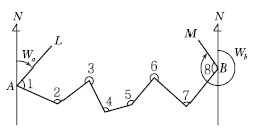
- 15ʺ
- 25ʺ
- 47ʺ
- 55ʺ
(정답률: 47%)
34. 평판측량에 있어서 평판상에 도시되어 있는 2~3개의 기지점에 평판을 세우고 방향선만으로 다른 미지점의 위치를 결정하는 방법은?
- 전방 교회법
- 도해 전진법
- 후방 교회법
- 측방 전진법
(정답률: 48%)
35. 수준측량에서 전시와 후시의 시준거리를 같게하면 소거가 가능한 오차가 아닌 것은?
- 관측자의 시차에 의한 오차
- 시준선상에 생기는 기차(氣差)에 의한 오차
- 기포관 축과 시준축이 평행되지 않았을 때 생기는 오차
- 지구의 곡률에 의하여 생기는 오차
(정답률: 64%)
36. 완화곡선에 대한 설명으로 옳지 않은 것은?
- 완화곡선의 곡선 반지름은 시점에서 무한대, 종점에서 원곡선의 반지름 R로 된다.
- 클로소이드의 형식에는 S형, 복합형, 기본형 등이 있다.
- 완화곡선의 접선은 시점에서 원호에 종점에서 직선에 접한다.
- 모든 클로소이드는 닮은꼴이며 클로소이드 요소에는 길이의 단위를 가진 것과 단위가 없는 것이 있다.
(정답률: 78%)
37. 항공사진측량에서 축척에 대한 공식으로 틀린 것은? (단, M：기준면에 대한 사진축척, f：초점거리, H：촬영고도, m：사진축척 분모수, I：사진상의 길이, s：실제거리)
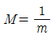
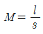
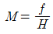
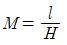
(정답률: 43%)
38. A, B, C, D 네 사람이 각각 거리 8km, 12.5km, 18km, 24.5km의 구간을 수준측량을 실시하여 왕복관측하여 폐합차를 7mm, 8mm, 10mm, 12mm 얻었다면 4명 중에서 가장 정확한 측량을 실시한 사람은?
- A
- B
- C
- D
(정답률: 58%)
39. 완화곡선 중 곡률반경이 경거에 반비례하는 곡선으로 주로 철도에 이용되는 것은?
- 클로소이드
- 3차포물선
- 렘니스케이트
- 복심곡선
(정답률: 51%)
40. 삼각망의 조정에서 하나의 삼각형 3점에서 같은 정밀도로 측량하여 생긴 폐합오차는 어떻게 처리하는가?
- 각의 크기에 관계없이 등배분한다.
- 대변의 크기에 비례하여 배분한다.
- 각의 크기에 반비례하여 배분한다.
- 각의 크기에 비례하여 배배분한다.
(정답률: 74%)
3과목: 수리학 및 수문학
41. 폭 2.4m, 높이 2.7m의 연직 직사각형 수문이 한쪽 면에서 수압을 받고 있다. 수문의 밑면은 힌지로 연결되어 있고 상단은 수평체인(Chain)으로 고정되어 있을 때 이 체인에 작용하는 장력(張力)은 얼마인가? (단, 수문의 정상과 수면은 일치한다.)
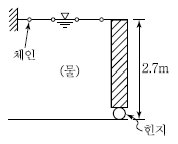
- 2.92ton
- 5.83ton
- 7.87ton
- 8.75ton
(정답률: 30%)
42. 길이 5m , 직경 8m의 원주가 수평으로 놓여 있을 경우 원주의 한쪽에 윗단까지 물이 차 있다면 이 원주에 작용하는 전수압은 약 얼마인가?
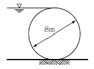
- 126ton
- 160ton
- 200ton
- 204ton
(정답률: 29%)
43. 양정이 5m일 때 4.9kW의 펌프로 0.03m3/sec를 양수했다면 이 펌프의 효율은 약 얼마인가?
- 0.3
- 0.4
- 0.5
- 0.6
(정답률: 70%)
44. 역적－운동량(Impulse－Momentum) 방정식인
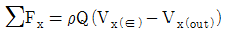
의 유도과정에서 설정된 가정으로 옳은 것은?- 흐름은 정상류(Steady Flow)이다.
- 흐름은 등류(Uniform Flow)이다.
- 압축성(Compressible) 유체이다.
- 마찰이 없는 유체(Frictionless Fluid)이다.
(정답률: 55%)
45. 내경 100mm , 조도계수 n=0.014의 관으로 물을 보낼 때 마찰손실계수 f는? (단, Manning 공식 적용)
- 0.0240
- 0.0306
- 0.0386
- 0.⑤26
(정답률: 55%)
46. 자유수면을 가지고 있는 깊은 우물의 유량공식은? (단, R：영향권의 반경, r0：우물 직경, h0：우물수심, H：원 지하수위, k：투수계수)
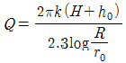
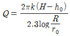
(정답률: 60%)
47. Pipe의 배관에 있어서 엘보(Elbow)에 의한 손실수두와 직선관의 마찰손실수두가 같아지는 직선관의 길이는 직경의 몇 배에 해당하는가? (단, 관의 마찰계수 f 는 0.025이고 엘보(Elbow)의 미소손실계수 K는 0.9이다.)
- 48배
- 40배
- 36배
- 20배
(정답률: 68%)
48. 다르시(Darcy)의 법칙에 대한 설명으로 옳은 것은?
- 점성계수를 구하는 법칙이다.
- 지하수의 유속은 동수경사에 비례한다.
- 관수로의 수리모형 실험법칙이다.
- 개수로의 수리모형 실험법칙이다.
(정답률: 58%)
49. 단위유량도 이론의 기본가정에 충실한 호우사상을 선별하여 분석하기 위해 선별 시 고려해야 할 사항으로 적당하지 않은 것은?
- 가급적 단순호우사상을 택한다.
- 강우지속기간 동안 강우강도의 변화가 가급적 큰 분포를 택한다.
- 유역 전반에 걸쳐 강우의 공간적 분포가 가급적 균일한 것을 택한다.
- 강우의 지속기간이 비교적 짧은 호우사상을 택한다.
(정답률: 64%)
50. 부피 5m3인 해수의 무게(W)와 밀도(p)를 구한 값으로 옳은 것은? (단, 해수의 단위중량은 1.025t/m3)
- 5ton, ρ＝0.1046kg ㆍ ec2e/m4
- 5ton, ρ＝104.6kg ㆍ ec2e/m4
- 5.125ton, ρ＝104.6kg ㆍ ec2e/m4
- 5.125ton, ρ＝0.1046kg ㆍ ec2e/m4
(정답률: 56%)
51. 면적 10km2의 지역에 4시간에 10mm의 강우 강도로 무한히 내릴 때 평형유출량(Qe)은 약얼마인가?
- 10.72m3/sec
- 9.26m3/sec
- 8.94m3/sec
- 6.94m3/sec
(정답률: 49%)
52. 그림과 같은 관(管)에서 V의 유속으로 물이 흐르고 있는 경우에 대한 설명으로 옳지 않은 것은?
- 흐름이 층류인 경우 A점에서의 유속(流速)은 단면(斷面) I의 평균유속의 2배이다.
- A점에서의 마찰저항력은 V2에 비례한다.
- A점에서 B점(管壁)으로 갈수록 마찰저항력은 커진다.
- 유속은 A점에서 최대인 포물선 분포를 한다.
(정답률: 66%)
53. 단파(Hydraulic Bore)에 대한 설명으로 옳은 것은?
- 수문을 급히 개방할 경우 하류로 전파되는 흐름
- 유속이 파의 전파속도보다 작은 흐름
- 댐을 건설하여 상류 측 수로에 생기는 수면파
- 계단식 여수로에 형성되는 흐름의 형상
(정답률: 61%)
54. 직사각형 위어의 월류수심 30cm에 대하여 측 정오차 8mm가 발생하였다. 이때 유량에 미치는 오차는?
- 4%
- 3%
- 2%
- 1%
(정답률: 47%)
55. 개수로의 점변류를 설명하는 dy/dx에 대한 설명으로 틀린 것은? (단, y 는 수심, x는 수평좌표를 나타낸다.)
- dy/dx= 0이면 등류이다.
- dy/dx＞0이면 수심은 증가한다.
- 경사가 수평인 수로에서는 항상 dy/dx=0이다.
- 흐름방향 x 에 대한 수심 y 의 변화를 나타낸다.
(정답률: 49%)
56. 티센(Thiessen) 면적 평균강우량(R) 산정식으로 옳은 것은? (단, Ai： i 관측소의 면적, Ri:i관측소의 강우량)
(정답률: 51%)
57. 유역면적이 1.2km2인 유역에서 강우강도 로 나타나고 도달시간이 10분이라 할때 유역출구에서 첨두유출량을 측정한 결과 22.80m3/sec이었다면 유출계수는?
- 0.55
- 0.60
- 0.65
- 0.70
(정답률: 70%)
58. 물의 단위중량 ω, 수면경사 I, 수리평균심 R이라 할 때, 등류 내에서의 유수의 소류력 τ를 구하는 식으로 옳은 것은?
- ωRI
- RI/w
- I/Rw
- Rw/I
(정답률: 74%)
59. 폭이 5m인 수문을 높이 d 만큼 열었을 때 유량이 18m3/sec가 흘렀다. 이때 수문 상 ㆍ하류의 수심이 각각 6m와 2m였다면 유량계수 C=0.6이라 할 때 수문 개방도(開放度) d는?
- 0.35m
- 0.43m
- 0.58m
- 0.68m
(정답률: 35%)
60. 유역의 평균강우량 산정방법이 아닌 것은?
- 산술평균법
- 등우선법
- Thiessen의 가중법
- 기하평균법
(정답률: 64%)
4과목: 철근콘크리트 및 강구조
61. 전단철근에 대한 설명으로 틀린 것은?
- 철근콘크리트 부재의 경우 주인장 철근에 45°이상의 각도로 설치되는 스터럽을 전단철근으로 사용할 수 있다.
- 철근콘크리트 부재의 경우 주인장 철근에 30°이상의 각도로 구부린 굽힘철근을 전단철근으로 사용할 수 있다.
- 전단철근으로 사용하는 스터럽과 기타 철근 또는 철선은 콘크리트 압축연단부터 거리 d만큼 연장하여야 한다.
- 용접 이형철망을 사용할 경우 전단철근의 설계 기준항복강도는 500MPa를 초과할 수 없다.
(정답률: 61%)
62. 길이가 3m인 캔틸레버보의 자중을 포함한 계수 등분포하중이 100kN/m일 때 위험단면에서 전단철근이 부담해야 할 전단력은 약 얼마인가? (단, fck＝24MPa, fy＝300MPa, b＝300mm, d＝500mm)
- 185kN
- 211kN
- 227kN
- 2 39kN
(정답률: 57%)
63. 경간 6m인 단순 직사각형 단면(b＝300mm, h＝400mm) 보에 계수하중 30kN/m가 작용할 때 PS강재가 단면도심에서 긴장되며 경간 중앙에서 콘크리트 단면의 하연 응력이 0이 되려면 PS강재에 얼마의 긴장력이 작용되어야 하는가?
- 1,8⑤kN
- 2,025kN
- 3,⑤4kN
- 3,557kN
(정답률: 75%)
64. 그림과 같은 나선철근 단주의 공칭 중심축하중(Pn)은? (단, fck=28MPa, fy=350MPa, 축방향 철근은 8－D25(As=4,⑤0mm2)를 사용)
- 1,786kN
- 2,551kN
- 3,450kN
- 3,665kN
(정답률: 50%)
65. 그림과 같은 맞대기 용접의 용접부에 발생하는 인장응력은?
- 100MPa
- 150MPa
- 200MPa
- 220MPa
(정답률: 73%)
66. 보의 활하중은 1.7t/m, 자중은 1.1t/m인 등분포 하중을 받는 경간 12m인 단순 지지보의 계수 휨모멘트(Mu)는?
- 68.4t ∙ m
- 72.7t ∙ m
- 74.9 ∙ m
- 75.4t ∙ m
(정답률: 71%)
67. 아래 그림과 같은 두께 19mm 평판의 순단면적을 구하면? (단, 볼트구멍의 직경은 25mm이다.)
- 3,270mm2
- 3,800mm2
- 3,920mm2
- 4,530mm2
(정답률: 63%)
68. 구조물의 부재, 부재 간의 연결부 및 각 부재 단면의 휨모멘트, 축력, 전단력, 비틀림모멘트에 대한 설계강도는 공칭강도에 강도감소계수 φ를 곱한 값으로 한다. 포스트텐션 정착구역에서의 강도감소계수는?
- 0.65
- 0.7
- 0.75
- 0.85
(정답률: 42%)
69. 압축철근비가 0.01이고, 인장철근비가 0.003인 철근콘크리트보에서 장기 추가처짐에 대한 계수(λ)의 값은? (단, 하중재하기간은 5년 6개월 이다.)
- 0.80
- 0.933
- 2.80
- 1.333
(정답률: 71%)
70. bw＝250mm이고, h＝500mm인 직사각형 철근콘크리트 보의 단면에 균열을 일으키는 비틀림모멘트 Tcr은 약 얼마인가?(단, fckk＝28MPa이다.)
- 9.8kN ∙ m
- 11.3kN ∙ m
- 12.5kN ∙ m
- 18.4kN ∙ m
(정답률: 34%)
71. 폭이 400mm, 유효깊이가 500mm인 단철근 직사각형 보 단면에서 fck＝35MPa, fy＝400MPa일 때, 강도설계법으로 구한 균형철근량은 약 얼마인가?
- 10,600mm2
- 7,590mm2
- 7,140mm2
- 5,120mm2
(정답률: 66%)
72. 인장응력 검토를 위한 L－150×90×12인 형강(Angle)의 전개 총폭 bg는 얼마인가?
- 228mm
- 232mm
- 240mm
- 252mm
(정답률: 73%)
73. 그림과 같은 철근콘크리트보 단면이 파괴시 인 장철근의 변형률은? (단, fck＝28MPa, fy＝350MPa, As＝1,520mm2)
- 0.004
- 0.008
- 0.011
- 0.015
(정답률: 63%)
74. 그림은 복철근 직사각형 단면의 변형률이다. 다음 중 압축철근이 항복하기 위한 조건으로 옳은 것은?
(정답률: 65%)
75. 다음 단면의 균열 모멘트 Mcr의 값은? (단, fck＝25MPa, fy＝400MPa)
- 16.8kN ∙ m
- 41.58kN ∙ m
- 63.88kN ∙ m
- 85.⑤kN ∙ m
(정답률: 61%)
76. 뒷부벽식 옹벽에서 뒷부벽을 어떤 보로 설계하여야 하는가?
- 직사각형 보
- T형 보
- 단순보
- 연속보
(정답률: 83%)
77. 그림의 단면에 계수비틀림모멘트 Tu＝18kN ㆍ km가 작용하고 있다. 이 비틀림모멘트에 요구되는 스터럽의 요구단면적은? (단, fck＝21MPa이 고, 횡방향 철근의 설계기준항복강도(fyt)＝350MPa,s는 종방향 철근에 나란한 방향의 스터럽 간격, At는 간격 s내의 비틀림에 저항하는 폐쇄스터럽 1가닥의 단면적이고, 비틀림에 대한 강도감소계수(φ)는 0.75를 사용한다.)
(정답률: 40%)
78. 경간I＝20m이고, 그림의 빗금친 부분과 같은반 T형 보 (b)의 등가응력사각형의 깊이 a는? (단, fck＝28MPa, fy＝400MPa)
- 33.61mm
- 38.42mm
- 134.45mm
- 262.34mm
(정답률: 38%)
79. 프리스트레스트 콘크리트 구조물의 특징에 대한 설명으로 틀린 것은?
- 철근콘크리트의 구조물에 비해 진동에 대한 저항성이 우수하다.
- 설계하중하에서 균열이 생기지 않으므로 내구성이 크다.
- 철근콘크리트 구조물에 비하여 복원성이 우수하다.
- 공사가 복잡하여 고도의 기술을 요한다.
(정답률: 55%)
80. 경간 25m인 PS콘크리트 보에 계수하중 40kN/m이 작용하고, P＝2,500kN의 프리스트레스가 주어질 때 등분포 상향력 u를 하중평형(Balanced Load) 개념에 의해 계산하여 이 보에 작용하는 순수하향 분포하중을 구하면?
- 26.5kN/m
- 27.3kN/m
- 28.8kN/m
- 29.6kN/m
(정답률: 58%)
5과목: 토질 및 기초
81. 단동식 증기 해머로 말뚝을 박았다. 해머의 무게 2.5t, 낙하고 3m, 타격당 말뚝의 평균관입량 1cm, 안전율 6일 때 Engineering－News 공식으로 허용지지력을 구하면?
- 250t
- 200t
- 100t
- 50t
(정답률: 52%)
82. 간극비가 e1＝0.80인 어떤 모래의 투수계수가 K1＝8.5×10－2cm/sec일 때 이 모래를 다져서 간극비를 e2＝0.57로 하면 투수계수 K2는?
- 8.5×10－3cm/sec
- 3.5×10－2cm/sec
- 8.1×10－2cm/sec
- 4.1×10－1cm/sec
(정답률: 46%)
83. 연약점토지반에 성토제방을 시공하고자 한다. 성토로 인한 재하속도가 과잉간극수압이 소산되는 속도보다 빠를 경우, 지반의 강도정수를 구하는 가장 적합한 시험방법은?
- 압밀 배수시험
- 압밀 비배수시험
- 비압밀 비배수시험
- 직접전단시험
(정답률: 76%)
84. 어느 포화된 점토의 자연함수비는 45%이었고, 비중은 2.70이었다. 이 점토의 간극비 e는 얼마인가?
- 1.22
- 1.32
- 1.42
- 1.52
(정답률: 60%)
85. 어떤 흙에 대해서 직접 전단시험을 한 결과 수직 응력이 10kg/cm2일 때 전단저항이 5kg/cm2이었고, 또 수직응력이 20kg/cm2일 때에는 전단 저항이 8kg/cm2이었다. 이 흙의 접착력은?
- 2kg/cm2
- 3kg/cm2
- 8kg/cm2
- 10kg/cm2
(정답률: 10%)
86. 도로 연장 3km 건설 구간에서 7개 지점의 시료를 채취하여 다음과 같은 CBR을 구하였다. 이 때의 설계CBR은 얼마인가?
- 4
- 5
- 6
- 7
(정답률: 48%)
87. 흙 속에서의 물의 흐름에 대한 설명으로 틀린 것은?
- 흙의 간극은 서로 연결되어 있어 간극을 통해 물이 흐를 수 있다.
- 특히 사질토의 경우에는 실험실에서 현장 흑의 상태를 재현하기 곤란하기 때문에 현장에서 투수시험을 실시하여 투수계수를 결정하는 것이 좋다.
- 점토가 이산구조로 퇴적되었다면 면모구조인 경우보다 더 큰 투수계수를 갖는 것이 보통이다.
- 흙이 포화되지 않았다면 포화된 경우보다 투수계수는 낮게 측정된다.
(정답률: 54%)
88. 그림과 같은 지반에 대해 수직방향 등가투수계수를 구하면?
- 3.89×10－4cm/sec
- 7.78×10－4cm/sec
- 1.57×10－3cm/sec
- 3.14×10－3cm/sec
(정답률: 73%)
89. 다음 그림과 같이 2m×3m 크기의 기초에 10t/m2의 등분포하중이 작용할 때 A점 아래 4m 깊이에서의 연직응력 증가량은? (단, 아래 표의 영향계수 값을 활용하여 구하며, 이고 B는 직사각형 단면의 폭, L은 직사각형 단면의 길이 z는 토층의 깊이이다.)
- 0.67t/m2
- 0.74t/m2
- 1.22t/m2
- 1.70t/m2
(정답률: 54%)
90. 점토 지반의 강성 기초의 접지압 분포에 대한 설명으로 옳은 것은?
- 기초 모서리 부분에서 최대응력이 발생한다.
- 기초 중앙 부분에서 최대응력이 발생한다.
- 기초 밑면의 응력은 어느 부분이나 동일하다.
- 기초 밑면에서의 응력은 토질에 관계없이 일정하다.
(정답률: 69%)
91. 현장다짐을 실시한 후 들밀도시험을 수행하였다. 파낸 흙의 체적과 무게가 각각 365.0cm3, 745 g이었으며, 함수비는 12.5%였다. 흙의 비중이 2.65이며 실내표준다짐시 최대 건도단위 중량이 rdmax＝1.90t/m3일 때 상대다짐도는?
- 88.7%
- 93.1%
- 95.3%
- 97.8%
(정답률: 66%)
92. 흙의 다짐에 있어 래머의 중량이 2.5kg, 낙하고 30cm, 3층으로 각층 다짐횟수가 25회일 때 다짐에너지는? (단, 몰드의 체적은 1,000cm3이다.)
- 5.63kgㆍm/cm3
- 5.96kgㆍm/cm3
- 10.45kgㆍm/cm3
- 0.66kgㆍm/cm3
(정답률: 61%)
93. 흙의 다짐에 관한 사항 중 옳지 않은 것은?
- 최적 함수비로 다질 때 최대 건조 단위중량이 된다.
- 조립토는 세립토보다 최대 건조 단위중량이 커진다.
- 점토를 최적함수비보다 작은 건조측 다짐을 하면 흙구조가 연모구조로, 흡윤측 다짐을 하면 이산구조가 된다.
- 강도증진을 목적으로 하는 도로 토공의 경우 습윤측 다짐을, 차수를 목적으로 하는 심벽재의 경우 건조측 다짐이 바람직하다.
(정답률: 59%)
94. 유선망의 특징을 설명한 것으로 옳지 않은 것은?
- 각 유로의 침투량은 같다.
- 유선은 등수두선과 직교한다.
- 유선망으로 이루어지는 사각형은 정사각형이다.
- 침투속도 및 동수구배는 유선망의 폭에 비례한다.
(정답률: 65%)
95. 토압계수 K＝0.5일 때 응력경로는 그림에서 어느 것인가?
- ①
- ②
- ③
- ④
(정답률: 72%)
96. 다음과 같은 지반에서 재하 순간 수주(水柱)가 지표면(지하수위)으로부터 5m였다. 40% 압밀이 일어난 후 A점에서의 전체 간극수압은 얼마인가?
- 6t/m2
- 7t/m2
- 8t/m2
- 9t/m2
(정답률: 40%)
97. 널말뚝을 모래지반에 5m 깊이로 박았을 때 상류와 하류의 수두차가 4m였다. 이때 모래지반의 포화단위중량이 2.0t/m3이다. 현재 이 지반의 분사현상에 대한 안전율은?
- 0.85
- 1.25
- 2.0
- 2.5
(정답률: 56%)
98. φ＝33°인 사질토에 25° 경사의 사면을 조성하려고 한다. 이 비탈면의 지표까지 포화되었을 때 안전율을 계산하면? (단, 사면 흙의 rsat＝1.8t/m2)
- 0.62
- 0.70
- 1.12
- 1.41
(정답률: 57%)
99. 다음은 시험종류와 시험으로부터 얻을 수 있는 값을 연결한 것이다. 틀린 것은?
- 비중계분석시험－흙의 비중(Gs)
- 삼축압축시험－강도정수(c, φ)
- 일축압축시험－흙의 예민비(St)
- 평판재하시험－지반반력계수(Ks)
(정답률: 58%)
100. 그림에서 정사각형 독립기초 2.5m×2.5m가 실트질 모래 위에 시공되었다. 이때 근입 깊이가 1.50m인 경우 허용지지력은? (단, Nc＝35, Nr＝Nq＝20)(오류 신고가 접수된 문제입니다. 반드시 정답과 해설을 확인하시기 바랍니다.)
- 25.0t/m2
- 30.0t/m2
- 35.0t/m2
- 45.0t/m2
(정답률: 47%)
6과목: 상하수도공학
101. 하수슬러지 탈수성을 개선하기 위한 슬러지 개량 방법으로 이용되지 않는 것은?
- 오존처리
- 세정
- 열처리
- 약품첨가
(정답률: 49%)
102. 계획급수인구를 추정하는 이론곡선식은 로 표현된다. 식 중의 K가 의미하는 것은? (단, y : x년 후의 인구, x : 기준년부터 의 경과연수, e : 자연대수의 밑, a ∙ b : 정수)
- 현재인구
- 포화인구
- 증가인구
- 상주인구
(정답률: 69%)
103. 유출계수가 0.6이고, 유역면적 2km2에 강우강도 200mm/hr의 강우가 있었다면 유출량은? (단, 합리식을 사용)
- 24.0m3/sec
- 66.67m3/sec
- 240m30/sec
- 666.67m3/sec
(정답률: 75%)
104. 저수지, 호수 등과 같이 정체된 수원에 대한 설명으로 틀린 것은?
- 하천수에 비해 부영양화 현상이 나타나기 쉽다.
- 봄철과 가을철에 연직방향의 순환이 일어난다.
- 상층과 하층의 수온차이는 겨울철이 여름철보다 작다.
- 여름철에는 중간층 부근에서 취수하는 것이 좋다.
(정답률: 39%)
1⑤. 급수보급률 90%, 계획 1인 1일 최대급수량 440L/인, 인구 10만의 도시에 급수계획을 하고자 한다. 계획 1일 평균급수량은? (단, 계획유효율은 0.85로 가정한다.)
- 37,400m3/day
- 33,660m3/day
- 39,600m3/day
- 44,000m3/day
(정답률: 65%)
106. 우수조정지의 구조형식으로 거리가 먼 것은?
- 댐식(제방높이 15m 미만)
- 월류식
- 지하식
- 굴착식
(정답률: 55%)
107. 호기성 소화의 특징을 설명한 것으로 옳지 않은 것은?
- 처리된 소화 슬러지에서 악취가 나지 않는다.
- 상징수의 BOD 농도가 높다.
- 폭기를 위한 동력 때문에 유지관리비가 많이 든다.
- 수온이 낮을 때에는 처리효율이 떨어진다.
(정답률: 55%)
108. 하수처리시설에서 폭기조의 혼합액 중 부유물농도(MLSS) 100g/m3, 반송슬러지 중의 부유물 농도 500g/m3일 때 슬러지 반송비는?
- 15%
- 20%
- 25%
- 30%
(정답률: 52%)
109. 대장균이 먹는 물에 검출될 경우 오염수로 판정되는 이유로 옳은 것은?
- 대장균은 번식시 독소를 분비하여 인체에 해를 끼치기 때문이다.
- 대장균은 병원균이기 때문이다.
- 사람이나 동물의 체내에 서식하므로 병원성 세균의 존재 추정이 가능하기 때문이다.
- 대장균은 반드시 병원균과 공존하기 때문이다.
(정답률: 71%)
110. 급속여과지에 대한 설명으로 옳지 않은 것은?
- 여과속도는 120~150m/day를 표준으로 한다.
- 여과모래의 균등계수는 3.0 이상으로 가능한 한 크게 하여야 한다.
- 여과모래의 유효경은 0.45~1.0mm 범위로 한다.
- 여과지 1지의 여과면적은 150m2이하로 한다.
(정답률: 51%)
111. 도·송수관로 내 최소 유속을 정하는 주요이유는?
- 관로 내면의 마모를 방지하기 위하여
- 관로 내 침전물의 퇴적을 방지하기 위하여
- 양정에 소모되는 전력비를 절감하기 위하여
- 수격작용이 발생할 가능성을 낮추기 위하여
(정답률: 75%)
112. 펌프의 공동현상(Cavitation)에 대한 설명으로 틀린 것은?
- 공동현상이 발생하면 소음이 발생한다.
- 공동현상을 방지하려면 펌프의 회전수를 높게 해야 한다.
- 펌프의 흡입양정이 너무 적고 임펠러 회전속도가 빠를 때 공동현상이 발생한다.
- 공동현상은 펌프의 성능 저하의 원인이 될 수 있다.
(정답률: 74%)
113. 하수관거의 배제방식에 대한 설명으로 옳지 않은 것은?
- 합류식은 청천시 관 내에 오물이 침전하기 쉽다.
- 분류식은 합류식에 비해 부설비용이 많이 든다.
- 분류식은 일정량 이상이 되면 우천시 오수가 월류한다.
- 합류식 관거는 단면이 커서 환기가 잘되고 검사에 편리하다.
(정답률: 63%)
114. 그림은 입도누적곡선이다. 이와 같은 입경분포를 가지는 모래의 유효경과 균등계수로 옳은 것은?
- 유효경 0.5mm, 균등계수 1.6
- 유효경 1.0mm, 균등계수 1.6
- 유효경 0.5mm. 균등계수 2.0
- 유효경 1.0mm, 균등계수 2.0
(정답률: 35%)
115. BOD 200mg/L, 유량 600m3/day인 어느 식료품 공장 폐수가 BOD 10mg/L, 유량 2m3/sec인 하천에 유입한다. 폐수가 유입되는 지점으로부터 하류 5km 지점의 BOD(mg/L)는? (단, 다른 유입원은 없고, 하천의 유속 0.⑤m/sec, 20℃탈산소계수(K1)＝0.1/day이고, 상용대수, 20℃기준이며 기타 조건은 고려하지 않음)
- 6.26mg/L
- 7.21mg/L
- 8.16mg/L
- 4.39mg/L
(정답률: 32%)
116. 토출량 5m3/s, 회전속도 150rpm, 전양정 2.5m인 펌프의 비속도(Specific Speed)는?
- 99
- 169
- 766
- 1,307
(정답률: 44%)
117. 하수관망 설계기준에 대한 설명으로 옳지 않은 것은?
- 관경은 하류로 갈수록 크게 한다.
- 오수관거의 유속은 0.6~3m/sec가 적당하다.
- 유속은 하류로 갈수록 작게 한다.
- 경사는 하류로 갈수록 완만하게 한다.
(정답률: 66%)
118. 계획정수량 20,000m3/day인 정수량에서 여과 방식으로 완속여과를 사용할 때, 여과지의 최소 면적은 얼마인가?
- 200m2
- 250m2
- 4,000m2
- 6,000m2
(정답률: 43%)
119. 도수 및 송수관로 계획에 대한 설명으로 옳지 않은 것은?
- 비정상적 수압을 받지 않도록 한다.
- 수평 및 수직의 급격한 굴곡을 많이 사용하여 자연유하식이 되도록 한다.
- 가능한 한 단거리가 되도록 한다.
- 최소한의 공사비가 소요되는 곳을 택한다.
(정답률: 73%)
120. 오수 및 우수관거의 설계에 대한 설명으로 옳지 않은 것은?
- 오수관거의 최소관경은 200mm를 표준으로 한다.
- 우수관경의 결정을 위해서는 합리식을 적용한다.
- 오수관거 내의 유속은 가능한 한 사류(射流) 상태가 되도록 한다.
- 오수관거의 계획하수량은 계획 시간 최대오수량으로 한다.
(정답률: 63%)
사각형 부피: 밑변이 10m, 높이가 5m인 직사각형의 부피는 10 x 5 x 10 = 500m³ 이다.
반원 부피: 지름이 10m인 반원의 반지름은 5m이므로, 부피는 1/2 x π x 5² x 10 = 125πm³ 이다.
따라서, 세장비는 500 + 125π ≈ 217.3 이다.